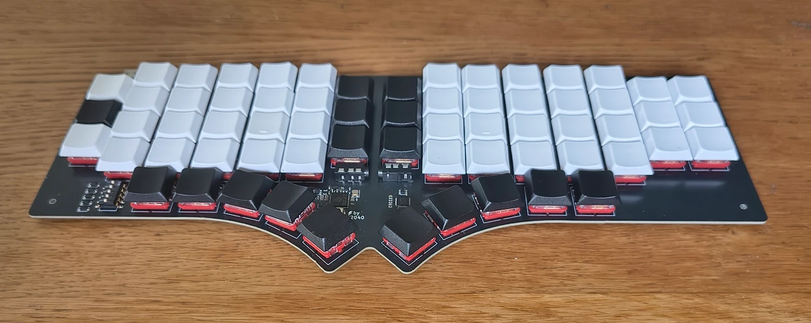
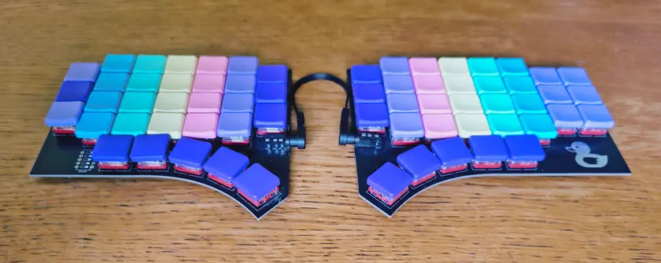

The Extremely Normal Keyboard.

We love unibody ortholinear keyboards for their comfort and ease of use. The matrix is a simple yet effective geometry: the parallel columns don’t match the angle of the arms, but along with the way fingers tend to spread, it’s a remakably close match. This immediate efficiency is what we praise in keyboards like the TypeMatrix or the Preonic, and we wanted to build our own keeb on this idea.
The main downside of ortholinear geometries is that outer columns tend to require harder finger stretches than on staggered ANSI/ISO keyboards. To mitigate this, the QMX 2040 has a half-unit vertical stagger on the outer columns: it helps significantly, while providing a visual hint for quick hand placement.
To further reduce finger stretches, the QMx 2040 uses Choc switches, which have a slightly smaller footprint than standard switches: 18×17 mm instead of 19.05×19.05 mm. Home columns have a 1.05 mm padding to preserve the expected lateral spread, while numbers and outer keys are closer to the home position.
The Quacken’s thumb clusters are so good, we cannot imagine making any keyboard without them. They’ve been adjusted to fit the ortholinear layout, and provide 5 usable keys per thumb.
We have a strong opinion about modifier keys: for us, they never should be under a pinky. Having Shift under a thumb might be confusing at first, but for most users it’s the biggest improvement to expect when switching to an ergonomic keyboard.
Most commercial ergonomic keyboards stick to a 4×6 geometry: 4 rows and 6 columns in a symmetric layout. This is visually appealing, but some outer keys like [{ }] !\ -_ += must then be moved to a dedicated layer, which adds unwanted complexity — especially for non-US keyboard layouts, which might have letters on those keys.
The QMx 2040 might be the first columnar keyboard with all alphanumeric keys in direct access for ANSI and ISO layouts. No adaptation needed, your keyboard layout immediately fits, thanks to the 4×7 grid under the right hand.
No keyboard can be truly ergonomic if it ever requires to leave the touch-typing position. So instead of having an arrow pad and dedicated function keys, the QMx has a single navigation layer providing an easy access to these keys:
This is a core concept in modern ergonomic keyboards: rather than moving your hands towards outer keys, use a layer to bring these keys under your hands.

The QMx2040 has two TRRS connectors and its PCB is pre-cut in the middle, so you can easily split it:
Use a hacksaw to split it nicely, then use sandpaper to smooth the edges. Wear an FFP2/N95 mask during the process to avoid inhaling dust.
We believe the QMx 2040 is the easiest and most versatile ergonomic keybord out there; for more advanced ergonomics, take a look at the Quacken.